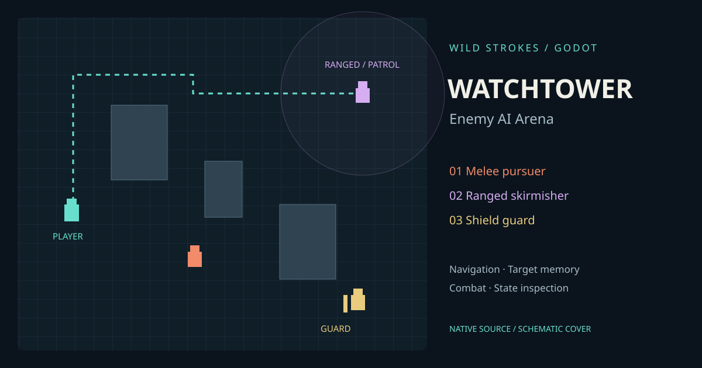

Melee pursuer
Closes distance, winds up and strikes. Step away before the attack commits.
GODOT / GDSCRIPT / GAMEPLAY SYSTEMS
A native top-down arena for inspecting enemy decisions. Fight three archetypes, move around cover and watch pursuit turn into search when sight is lost.

Closes distance, winds up and strikes. Step away before the attack commits.
Fires at medium range and seeks room when the player approaches.
Front-facing protection absorbs 75% of damage. Find an angle around its shield.
project.godot.No external assets, plugins, .NET or online account required. Spawn buttons add enemies at free designated points.
Debug rendering shows state labels, detection radii and A* routes. Walls block sight; enemies remember the last seen position briefly. Low health prompts retreat. The sidebar reports health, hostiles, defeated enemies and live FPS.
Godot 4.4.1 headless import and 31 native integration checks passed. Graphical playthrough, exported builds and hardware performance remain unverified. This page provides source, not an embedded playable export. Cover art is a schematic. Visuals are procedural starters; no sound or multiplayer is included.